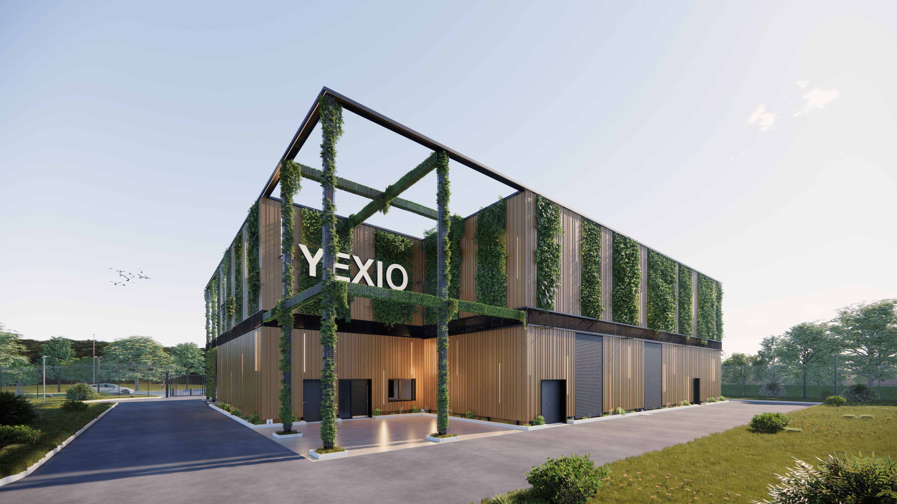
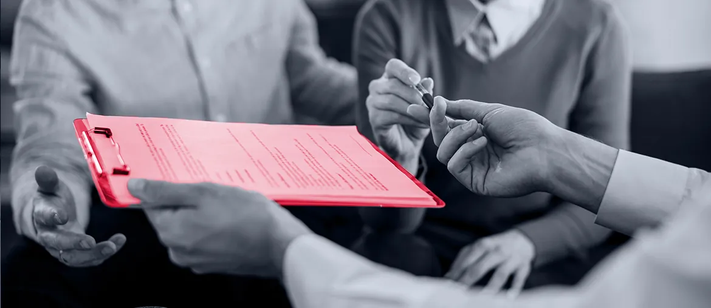

1
Map the trial path
Map portal and API flows for trials, then mark the C# and Go services that block customer onboarding.
Yorizon is building a sovereign cloud platform with portal, API, and AI services. We would add senior delivery capacity around the flows that buyers and partners test first.
Why we are here: you are hiring C# and Go developers for an OpenStack-based platform. That usually means the roadmap needs more backend depth without slowing architecture work.

The C# and Go roles say Yorizon is scaling the core platform, not only adding headcount. The hard part is likely portal and API work around OpenStack, identity, provisioning, and trial use. If that work stays only with the core team, pilots can wait for small fixes and docs. Soner's AI role adds one more layer: Factory AI must feel as clear and safe as the IaaS base.
Engagement model: a dedicated squad under Yorizon's PO or Programme Delivery lead. The squad works inside your cadence and ships reviewed code, tests, and release notes.
Map portal and API flows for trials, then mark the C# and Go services that block customer onboarding.
Add senior backend capacity for REST, gRPC, identity, and provisioning work without pulling Yorizon architects into every ticket.
Build regression tests around VM, storage, API, and Factory AI paths that partners need for pilots.
Harden CI/CD, Docker, and Kubernetes release steps so platform changes move with cleaner checks and fewer handoffs.
Leave Yorizon with playbooks, test packs, and a clear backlog for the next quarter of platform work.

Go, Kubernetes, React, Python, and PostgreSQL work for an infrastructure platform. Outcome: high-volume router payload handling at production scale.
Read the case study
C#, .NET, Angular, MS SQL, and Kubernetes work for a hosted multi-tenant platform with admin portal flows.
Read the case studyShare one platform bottleneck and we will map next steps.
Start the conversation